The whole FXerkan profile, rendered live in each palette — rails, cards, icons and all — with the contribution graphic cycling through every style in the middle. On GitHub the profile is static (GitHub honours reduce-motion) and its style rotates daily; here it always animates. Pick a palette:















